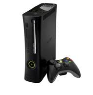
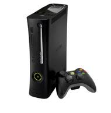

Some of My Hobbies
I like to program, there is just something about being able to build something from the ground up that is satisfying. I like to read, books can show amazing worlds. I sometimes write stories. I like to play Dungeons & Dragons, my brother and I joined a school club and we meet after school every week. I tend to watch Youtube videos in my free time, my favorite show is RWBY which used to be posted on Youtube, but Rooster Teeth has started posting it on their own website. Volume 6 just came out. I have an Xbox 360, my favorite game is Skyrim. I like to make things myself instead of using what others have made.
 
